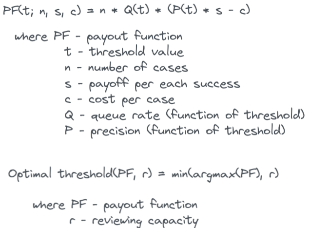
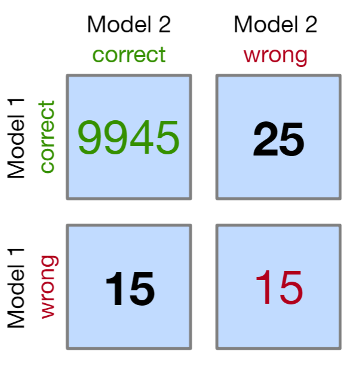
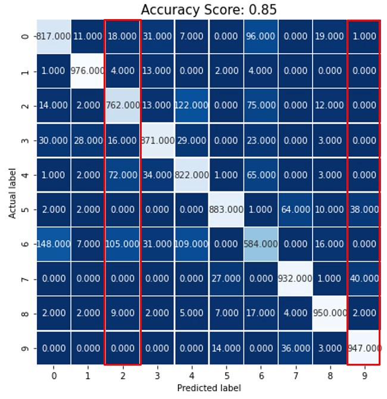
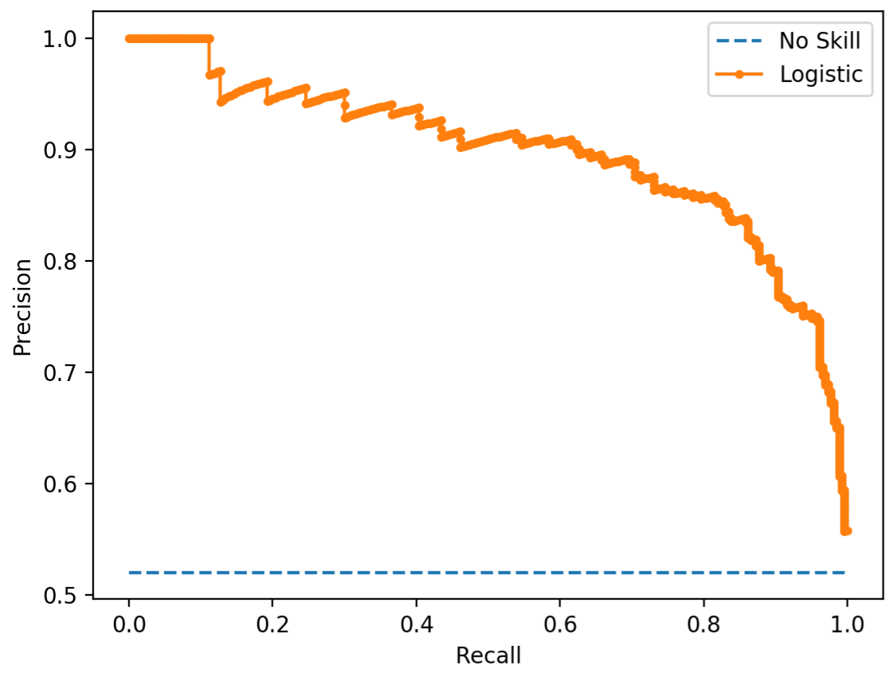
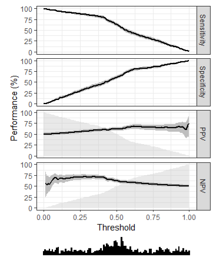
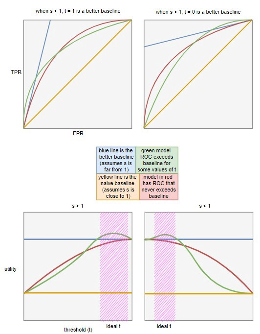
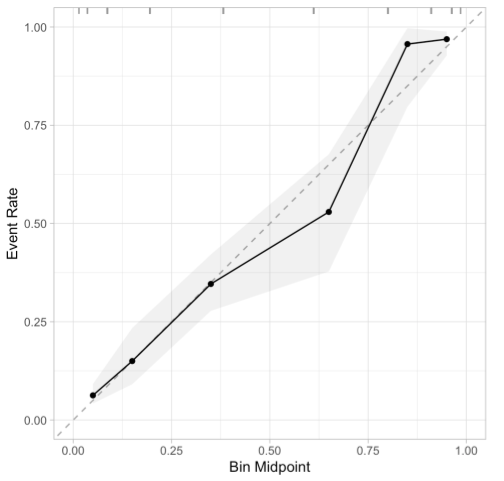
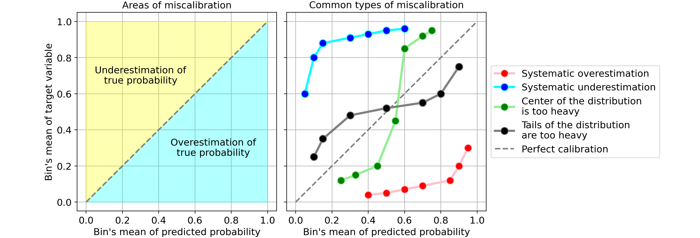
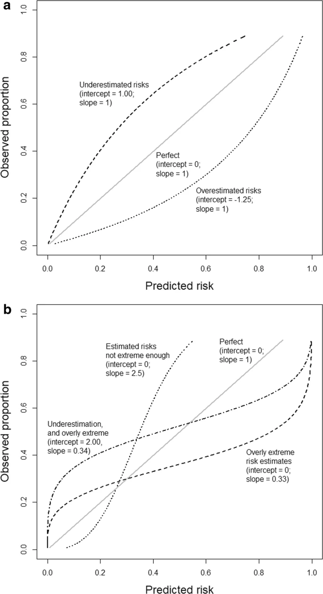

Classification
Misc
- Also see Diagnostics, Regression >> Residuals
- Two main types of quantities to validate (Harrell RMS Ch.5)
- Calibration (aka reliability): ability to make unbiased estimates of response (Y^ vs. Y)
- Discrimination: ability to separate responses
- Binary logistic model: e.g. AUROC
- (more optional) Centrality of errors: e.g. Brier Score
- Custom Cost Functions
- Also see
- Examples
- Calculating the Business Value of a Data Science Project
- See notebook
- Visualizing Machine Learning Thresholds to Make Better Business Decisions
- Uses a Telecom subscriptions churn example and incorporates available resources (queue rate) that can review flagged events in order to choose a threshold
- i.e. if you can only review 50 cases, then you model need only flag 50 cases
- Adds uncertainty by using multiple train/test splits and creating quantiles for CIs
- Optimizes resources, costs, precision, and recall to produce a threshold
- Uses a Telecom subscriptions churn example and incorporates available resources (queue rate) that can review flagged events in order to choose a threshold
- Example of model ROI calculation: see Banking/Credit >> Fraud >> Misc
{kind=link}
Terms
- Calibration - When the predicted probabilities from a model match the observed distribution of probabilities for each class. A well-calibrated model is one that minimizes residuals.
- Calibration-in-the-Large - mean calibration
- Harrell: “compares the average Y-hat with the average Y (does the model get the right result on average).”
- average predicted risk compared with the overall event rate
- Concerned with gross measurements of calibration, such as:
- Whether the model’s overall expected number of events exceeds the observed number
- Whether the proportion of expected over observed events departs significantly from “1”
- Harrell: “compares the average Y-hat with the average Y (does the model get the right result on average).”
- Calibration-in-the-Small - means that each of your model’s predicted probabilities, i.e. 0.01, 0.02, …, 0.99, occur exactly at that proportion in the observed data/real world
- i.e., for all the times when the predicted risk was 0.4, the outcome happened about 0.4 of the time.
- More important than calibration-in-the-large. Required for good decision making using risk models.
- Harrell: Assesses the absolute forecast accuracy at the individual levels of Y-hat.
- Smooth calibration curves visualizes this (See Calibration >> Calibration Plots >> Harrell)
- A curve close to the diagonal indicates that predicted risks correspond well to observed proportions
- “calibration-in-the-tiny” the next step: for males in which the prediction was 0.4 was the outcome present 0.4 of the time, then for females.
- Discrimination - The ability of the predictive model to predict the observed class. It’s not a particular performance measure. Typically AUROC, Somers’ Dxy
- Predictive discrimination is the ability to rank order subjects
- Example: The higher the ratio of patients who have high predicted risk probabilities / patients who actually have the disease, the better the discrimination by the model
- “High” is determined by a cutpoint or threshold
- External Validity - The extent to which your results can be generalized to other contexts. Assesses the applicability or generalizability of the findings to the real world. So, your study had significant findings in a controlled environment. But will you get the same results outside of the lab?
- Internal Validity - The degree of confidence that the causal relationship you are testing is not influenced by other factors or variables. Evaluates a study’s experimental design and methods. Studies that have a high degree of internal validity provide strong evidence of causality.
- Using CV or bootstrapping is sometimes referred to as performing internal validation
- Proper Scoring Rule (SO discussion + Harrell links) - A score assesses whether a probabilistic forecast is close to the true distribution. A score that is minimized in expectation if the predictive density is the true density.
- Loss functions that map predicted probabilities and corresponding observed outcomes to loss values, which are minimized in expectation by the true probabilities (p,1−p). The idea is that we take the average over the scoring rule evaluated on multiple (best: many) observed outcomes and the corresponding predicted class membership probabilities, as an estimate of the expectation of the scoring rule
- Also
- Strictly proper scoring rules -rules that are only minimized in expectation if the predictive density is the true density
- Improper scoring rules - (e.g. Accuracy)
Confusion Matrix Statistics
False Discovery Rate (FDR)
\[ FDR = \frac{FP}{TP + FP} = 1 − PPV \]
- Expected ratio of the number of false positive classifications (false discoveries) to the total number of positive classifications (rejections of the null)
- FDR-controlling procedures provide less stringent control of Type I errors compared to family-wise error rate (FWER) controlling procedures (such as the Bonferroni correction), which control the probability of at least one Type I error.
- Thus, FDR-controlling procedures have greater power, at the cost of increased numbers of Type I errors.
False Positive Rate (FPR)
\[ FPR = 1 - TNR = \frac{FP}{FP + TN} \]
False Negative Rate (FNR)
\[ FNR = 1 - TPR = \frac{FN}{FN + TP} \]
Negative Likelihood Ratio (LR-)
\[ LR_- = \frac{FNR}{TNR} \]
Negative Predictive Value (NPV)
\[ NPV = \frac{TN}{TN + FN} \]
- \(PPV\) and \(NPV\) are useful after the result of the test in know (unlike Sensitivity and Specificity which are useful before the results are known)
- Both \(PPV\) and \(NPV\) are useful GoF metrics since they describe performance on future data.
- {yardstick}
Positive Likelihood Ratio (LR+)
\[ LR_+ = \frac{TPR}{FPR} \]
Precision or True Positive Rate (TPR) or Positive Predictive Value (PPV)
\[ \mbox{Precision} = \frac{TP}{TP + FP} \]
- The fraction of observations that the model identified as positive that were correct (i.e. the fraction of all the actual positives (\(TP+FN\)) that you model labels as positives.)
- Focuses on Type-I error (\(FP\))
- Interpretation: 1 is perfect, < 0.5 is low
- Maximize when \(FPs\) are more costly
- Examples
- An event is mistakenly detected that results in a high value customer getting their account suspended.
- You want to reduce the number of unsuccessful marketing calls that the model predicts will be conversions.
- Examples
Prevalence
\[ \mbox{Prevalence} = \frac{P}{P+N} \]
- Proportion of a particular population found to be affected by a medical condition (typically a disease or a risk factor such as smoking or seatbelt use) at a specific time
- Prevalence Threshold: The prevalence level below which a test’s positive predictive value (PPV) declines most sharply relative to disease prevalence - and thus the rate of false positive results/false discovery rate increases most rapidly.
Recall or Sensitivity
\[ \mbox{Recall} = \frac{TP}{TP + FN} \]
The fraction of all true positives that the model got correct
Focuses on Type-II error (\(FN\))
Probability of detecting a condition when it’s truly present
- i.e. normally want high sensitivity and low specificity
As the number of \(FNs\) towards 0, the value of Recall will tend to \(TP/TP = 1\)
Interpretation: 1 is perfect, < 0.5 is low
Maximize when \(FNs\) are more costly
- Examples
- A customer gets their card stolen and incurs fraudulent charges, but the model doesn’t detect it.
- Examples
Python:
for i in range(n_classes): recall = np.mean(y_pred[y_test == i] == y_test[y_test == i]) print(f"Recall for class {class_labels[i]}: {recall:0.3f}")- Filter for a specific category, then take the mean.
Specificity or True Negative Rate (TNR)
\[ \mbox{Specificity} = \frac{TN}{TN + FP} \]
- The fraction of all the true negatives the model got correct
- Probability of not detecting a condition when it’s truly present
- i.e. normally want high sensitivity and low specificity
Type I Error: False Positives - If \(FPs\) are more costly than \(FNs\), then the threshold is raised to increase the accuracy of the model in predicting positive cases
Type II Error: False Negatives - If \(FNs\) are more costly than \(FPs\), then the threshold is lowered to increase the accuracy of the model in predicting negative cases
Scores
Misc
- Types
- Threshold (e.g. F-Scores, Accuracy, Precision, Recall)
- Determining thresholds depends on being able to correctly quantify the costs of type 1 and 2 errors
- Use confusion matrix stats that depend on your threshold
- Ranking (AU-ROC/PR)
- In a well-ranked model, the probabilities for the positive class tend to be higher than those for the negative class
- Costs not included
- An expected utility can’t be calculated
- Not intuitive to a non-technical audience
- Calibration (Brier Score, Log Loss)
- Threshold (e.g. F-Scores, Accuracy, Precision, Recall)
- Comparison of similar scoring models
- Notes from https://evidentlyai.com/blog/tutorial-2-model-evaluation-hr-attrition
- If there’s no clear winner in terms of scores, then you need to drill down.
- If models differ significantly on one or couple scores but not the others. Determine what that score optimizes for (e.g. precision, recall, etc.) and if that fits your use case.
- How does changing the classification threshold effect the scores?
- Makes sure whichever measure (e.g TP, FP, etc.) you’re maximizing for has plenty of observations, so you know you’re seeing a real effect.
- Examine how the models predict different groups (aka cohorts).
- Example: If it’s a employee churn model, how does the model perform on employees from different departments, skill level, roles, etc.
- One cohort might be more important to keep from churning than another.
- Out-of-Bag Error (OOB) - Mean prediction error on each training sample (row) using only trees that didn’t use that sample in their bootstrap resample
- Useful when there isn’t enough data for a validation set.
- Types
Balanced Accuracy
\[ BA = \frac{cTP}{P} + \frac{(c-1)TN}{N} \]
- \(c\) is a cost weight between 0 and 1
- \(P\) and \(N\) are observed Positives and Negatives
- Can also be used when the negative class is more important to get right
- e.g. Cost Reductions: Reduce unnecessary treatments of healthy patients that got an FP on their disease test
- {yardstick}
Brier Score
How far your predictions lie from the true values
- A mean square error in the probability space
Smaller Brier scores are better
Inherently measures calibration and discrimination (source)
Random guess model (i.e. all predicted probabilities = 0.50) has a Brier score of 0.25
- When the outcome incidence is lower (i.e. event rate, proportion of 1s), the maximum score for a random guess model is lower, eg, for 10%: 0.1 x (1 - 0.1)2 + (1 - 0.1) x 0.12 = 0.090.
Where the formula is:
\[ Y(1- p)^2 + (1-Y)p^2 \]
- When the outcome incidence is lower (i.e. event rate, proportion of 1s), the maximum score for a random guess model is lower, eg, for 10%: 0.1 x (1 - 0.1)2 + (1 - 0.1) x 0.12 = 0.090.
Issue: Inadequate for very rare (or very frequent) events, because it does not sufficiently discriminate between small changes in predictions that are significant for rare events.
- n > 1000 required for higher-skill predictions of relatively rare events, whereas only quite modest sample sizes are needed for low-skill forecasts of common events (wiki)
Bootstrapping code (article)
Binary Outcomes
\[ BS = \frac{1}{N}\sum_{t=1}^N (f_t - o_t)^2 \]
- \(f\) is the predicted probability
- \(o\) is the observed outcome
- Range is from 0 to 1
- Mean of brier loss
Polytomous Outcomes
\[ BS = \frac{1}{N}\sum_{t=1}^N\sum_{i=1}^R (f_{ti} - o_{ti})^2 \]
- R is the number of categories
- Range is from 0 to 2
Brier Skill Score (BSS)
\[ BSS = 1 - \frac{BS}{BS_{\text{ref}}} \]
- Percentage improvement in the BS compared to the reference model
- Still a strictly proper scoring rule
- Values between 0 and 1
- Higher is better
- \(BS\) is the brier score
- \(BS_{\text{ref}}\) is a reference/baseline brier score that your trying to beat
Default value (no-skill/naive model value)
\[ BS_{\text{ref}} = \frac{1}{N} \sum_{t=1}^N (\bar o - o_t)^2 \]
- **for binary outcomes
- \(o\) is the observed outcome
- \(\bar o\) is the average observed outcome (i.e. overall proportion of 1s)
Scaled Brier Score
\[ \begin{align} &SBS = 1 - \frac{BS}{BS_{\text{max}}} \\ &\text{where} \;\; B_{\text{max}} = \bar p (1 - \bar p) \end{align} \]
Code
scaled_brier <- function(x, p, ...){ format(round(1 - (x / (mean(p) * (1 - mean(p)))), digits = 2), nsmall = 2) }Range between 0% and 100%
Cohen’s Kappa
- A similar measure to accuracy, but is normalized by the accuracy that would be expected by chance alone and is very useful when one or more classes have large frequency distributions.
- Extends naturally to multiclass scenarios
yardstick::kap, docs- A measure of agreement between categorical variables X and Y
- Calculated from the observed and expected frequencies on the diagonal of a square contingency table
- Range: 0 < \(\kappa\) < 1, although negative values do occur on occasion.
- Suited for nominal (non-ordinal) categories.
- Weighted kappa can be calculated for tables with ordinal categories.
- See Penn Stats Stats 509 for further details, equation
F scores
Each score weights \(FP\) and \(FN\) differently. A trade-off between Precision and Recall
Range: 0 to 1
- 1 - Perfect precision and recall
- 0 - Either precision or recall are zero.
- i.e. A low F-score doesn’t tell you whether it’s precision or recall that is the problem
- Maximizing FPR along with F1 will help curb Type-I errors and you’ll get an idea about the villain behind your low F1-score
- Rule of Thumb
- > 0.9 Very good
- 0.8 - 0.9 Good
- 0.5 - 0.8 OK
- < 0.5 Not good
Fine for imbalanced classes as long as the positive class (TP and FP) is what’s important and not the negative class (e.g. FN and TN) (article)
\(F_\beta\)
\[ F_\beta = \frac{1+\beta^2}{\frac{1}{\mbox{Precision}}+\frac{\beta^2}{\mbox{Recall}} + } \]
- A generalized F score
- Choose your own ratio
- The more you care about recall over precision the higher beta you should choose
- e.g. If you want precision to be twice as important than recall, you’d set \(\beta\) to 0.5
- Use when you care more about the positive class
\(F_{1}\)
\[ \begin{align} F_1 &= \frac{2}{\frac{1}{\mbox{Precision}} + \frac{1}{\mbox{Recall}}} \\ &= \frac{TP}{TP + 0.5(FP + FN)} \end{align} \]
- Harmonic mean of precision and recall
- Recall and precision are of the same importance
\(F_2\)
\[ \begin{align} F_2 &= \frac{5}{\frac{4}{\mbox{Precision}} + \frac{1}{\mbox{Recall}}} \\ &= \frac{TP}{TP + 0.8FP + 0.2FN} \end{align} \]
- \(F_2\): 80/20
- β = 2. Therefore you care about Recall twice as much as Precision
- \(F_2\): 80/20
\(F_3\)
\[ F_3 = \frac{TP}{TP + 0.9FP + 0.1FN} \]
- \(F_3\): 90/10
- β = 3. Therefore you care about Recall 3 times as much as Precision
- \(F_3\): 90/10
H measure
- {hmeasure}
- See bkmks for vignette
- Instead of using misclassification cost (c, see above) as a constant it defines it as a distribution
- {hmeasure}
J index (a.k.a. Youden’s J statistic)
\[ J = sensitivity + specificity - 1 \]
- Values near one are best. lower for models with pathological distributions for the class probabilities (i.e. uncalibrated)
Lift Score
\[ \mbox{Lift} = \frac{\frac{TP}{TP+FP}}{\frac{TP+FN}{TP+TN+FP+FN}} \]
The ratio of correctly predicted positive examples and the actual positive examples in the test dataset.
Range: 0 to \(\infty\)
Values greater than 1 represent a valuable model
Example: Using lift score within {sklearn::GridSearchCV}
from mlxtend.evaluate import lift_score scorer = { 'lift_score': make_scorer(lift_score) } clf = GridSearchCV(SVC(), hyperparameters, cv=10, scoring=lift_scorer)From Raschka library
- Also has examples on how to implement
make_scoreris from {{sklearn}}
{yardstick::lift_curve}
{ROCR}
Matthew’s Correlation Coefficient (MCC)
\[ MCC = \frac{(TP \cdot TN)-(FP \cdot FN)}{(TP+FP)(TP+FN)(TN+FP)(TN+FN)} \]
- It’s a correlation between predicted classes and ground truth.
- Aka Phi Coefficient (i.e. Pearson Correlation for 2x2 tables, i.e. binary variables)
- {yardstick}
- Range: -1 to 1
- 0 is equivalent to a random prediction
- -1 predictions are perfectly negatively correlated with the truth
- 1 predictions are perfectly postiviely correlated with the truth (model is perfect)
- Uses all confusion matrix values
- Robust to class imbalance
- It’s a correlation between predicted classes and ground truth.
McNemar’s Test
Chi-Squared test for symmetry
See Post-Hoc Analysis, General >> Dichotomous Data >> for details and code
Uses this matrix format
matrix(c(9945, 25, 15, 15), nrow = 2, dimnames = list("model 1" = c("Correct", "Wrong"), "model 2" = c("Correct", "Wrong")))- If “wrong-correct” or “correct-wrong” have counts < 50, then use the Exact Tests to get accurate p-values
For more than 2 models, Cochran’s Q test can be used (Generalized McNemar’s Test)
Mean Log Loss (aka Cross-Entropy)
\[ \mbox{MeanLogLoss} = -\frac{1}{N} \sum_{i=1}^N y_i \cdot \log (\hat{p}_i) + (1-y_i) \cdot \log(1 - \hat{p}_i)) \]
- \(\hat p\) is the predicted probability and \(y\) is the numeric observed label (0/1)
- The difference between ground truth and predicted score for every observation and average those errors over all observations
- Lower is better
- A perfect model has a mean log loss of 0.
- {yardstick::mn_log_loss}
- Also see Loss Functions for issues with this metric
Misclassification Cost
\[ \mbox{Misclassification Cost} = c_1FP + c_2FN \]
Where \(c_1\) and \(c_2\) are costs per \(FP\) and per \(FN\) respectively; \(FP\) is total False Positives and \(FN\) is total False Negatives
Simple method to assign a business value to a classification model
See {yardstick::classification_cost}
Misclassification Rate
\[ \begin{align} &\mbox{Misclassification Rate} = 1 - Accuracy \\ &\text{where} \;\; \mbox{Accuracy} = \frac{TP + TN}{TP + TN + FP + FN} \end{align} \]
- Uses Accuracy so terrible for unbalanced classes.
No-information rate
no_information_rate <- function(data) { data %>% count(outcome_var) %>% mutate(proportion = n / sum(n)) %>% top_n(1, proportion) %>% pull(proportion) }- The proportion of the most common class
- Used as a baseline metric for comparing models in multinomial classification
PR-AUC
- The area under the Precision-Recall curve
- Values near one indicate very good results while values near 0.5 would imply that the model is very poor
- Better for imbalanced classes
- PR AUC focuses mainly on the positive class (PPV and TPR) it cares less about the frequency of the negative class
- Use when you care more about positive than negative class
Pseudo R2
library(DescTools) PseudoR2(model, which = c("CoxSnell", "Nagelkerke", "Tjur")) ## CoxSnell Nagelkerke Tjur ## 0.6583888 0.9198193 0.8795290- Example: How much of the likelihood of promotion does my model explain?
- Our model explains more than two thirds of the variation in the promotion outcome.
- Example: How much of the likelihood of promotion does my model explain?
ROC-AUC
- aka AUROC, concordance statistic, or c-statistic
- The area under the ROC is an overall assessment of performance across all cutoffs.
- Where ROC is Sensitivity vs (1 - Specificity) (aka TPR vs FPR) chart
- Values near one indicate very good results while values near 0.5 would imply that the model is very poor.
- Use it when you care equally about positive and negative classes
- Do NOT use it if you have imbalanced classes
Somers’ \(D_{xy}\)
\[ D_{xy} = 2(c - 0.5) \]
- Where c is the concordance probability or AUROC
- A pure discrimination measure which is a rank correlation between \(Y\) and \(\hat Y\)
{kind=link}
Class Imbalance
- Misc
- Class imbalance sampling methods tend to greatly improve metrics based on the hard class predictions (i.e., the categorical outcome variables and not binned numeric variables) because the default cutoff tends to be a better balance of sensitivity and specificity.
- e.g J index vs AUC
- ROC curves and PR curves have inflated performance under strong class imbalance
- Class imbalance sampling methods tend to greatly improve metrics based on the hard class predictions (i.e., the categorical outcome variables and not binned numeric variables) because the default cutoff tends to be a better balance of sensitivity and specificity.
- Scores: F-Scores, MCC, PR-AUC, Cohen’s Kappa, precision at fixed recall, recall at fixed precision
- Precision-Recall
- In cases of balanced classes, Sensitivity and Specificity are often used
- For less-than-perfect models (FP = FN = 0), if you increase Precision, you reduce Recall and vice versa.
- Sensitive to class-imbalance
- You can’t compare curves that have been tested on two different test sets if the class proportions differ
- A test-set with a 50:50 proportion will have higher scores in general as compared to a test-set with a 10:90 proportion for the primary class.
- Guidelines for AUPRC vs AUROC
- Notes from A Closer Look at AUROC and AUPRC under Class Imbalance
- AUROC
- Context-Independenct Scenarios
- When it is not known in advance where samples of interest will live in the output space, nor are particular cost ratios known, there should be no preference for mistake correction
- AUROC impartially values improvements across the entire model output
- Elevated False Negative Costs Scenarios
- Example: Early screening for critical illnesses like cancer
- A primary goal of the model will be to achieve the fewest missed cancer cases; equating to prioritizing model Recall.
- The most important mistakes to correct occur at lower score thresholds, as high-score mistakes will not change which positive samples are missed in deployment settings (as chosen thresholds are likely to be low).
- This behavior is the inverse of what AUPRC prioritizes
- Example: Early screening for critical illnesses like cancer
- Ethical Resource Distribution Among Diverse Populations Scenarios
- One must avoid prioritizing model improvements that selectively favor one subpopulation
- We must prioritize across all subpopulations equally means that AUPRC’s global preference is untenable as it could induce bias.
- AUPRC will target high-score regions selectively, and it risks unduely favoring high-prevalence subpopulations
- Context-Independenct Scenarios
- AUPRC
- Scenarios for reducing false positives in high-cost, single-group intervention prioritization or information retrieval settings
- The cost associated with false positives significantly outweighs that of false negatives, and there is an absence of equity concerns.
- Example: Selecting candidate molecules from a fragment library for drug development trials, where only the most promising molecules will proceed to costly experimental validation
- The metric of choice should facilitate a reduction in high-score false positives.
- Scenarios for reducing false positives in high-cost, single-group intervention prioritization or information retrieval settings
Multinomial
- Misc
- Packages
- {MultiClassROC} - computing and visualizing Receiver Operating Characteristics (ROC) and Area Under the Curve (AUC) for multi-class classification problems
- Also see
- Scores
- >> No-information Rate for a generic accuracy baseline
- >> Brier-Score >> Polytomous Outcomes
- >> Cohen’s Kappa
- >> Mean Log Loss
- Scores
sklearn::classification_reportcalculates the maps and waps for precision, recall, and f1-score- “Support” in this report refers to label and total sample sizes.
- See Model building, sklearn >> Misc >> Score Model for code
- Packages
- Confusion Matrix
- Class labels are numbers 0-9
- The decimal places are confusing but these are counts of the predicted label matching each observed label
- Precision for Label 9 = \(TP / (TP + FP) = 947/ (947 + 1 + 0 + 0 + 0 + 0 + 38 + 0 + 40 + 2) = 0.92\)
- Columns are used for precision calculation
- Recall for label 9 = \(TP / (TP + FN) = 947 / (947 + 0 + 0 + 0 + 0 + 0 +14 + 0 + 36 + 3) = 0.947\)
- Rows are used for recall calculation
- Macro Average Precision - simple arithmetic average of the precision of all the labels
- \(map = (0.80 + 0.95 + 0.77 + 0.88 + 0.75 + 0.95 + 0.68 + 0.90 + 0.93 + 0.92) / 10 = 0.853\)
- Weighted Average Precision - the precision of each label is multiplied by their sample size and the weighted sum is divided by the total number of samples
- \(wap = (760*0.80 + 900*0.95 +535*0.77 + 843*0.88 + 801*0.75 + 779*0.95 + 640*0.68 + 791*0.90 + 921*0.93 + 576*0.92) / 7546 = 0.86\)
- Where 760 = sample size for label 0, 900 = sample size for label 1, etc., and 7546 is the total sample size
- \(wap = (760*0.80 + 900*0.95 +535*0.77 + 843*0.88 + 801*0.75 + 779*0.95 + 640*0.68 + 791*0.90 + 921*0.93 + 576*0.92) / 7546 = 0.86\)
- Same techniques can be used for F-Scores and others.
- Example: The F-Score would be calculated for each label. Then, the map and wap can be calculated from those individual label scores.
{kind=link}
Curves
Misc
- {rtichoke} - Interactive ROC/PR curves; all kinds of additional information provided in the pop-up
- {yardstick}
- {ROCR} - ROC curves, precision/recall plots, lift charts, cost curves, custom curves by freely selecting one performance measure for the x axis and one for the y axis, handling of data from cross-validation or bootstrapping, curve averaging (vertically, horizontally, or by threshold), standard error bars, box plots, curves that are color-coded by cutoff, printing threshold values on the curve, tight integration with Rs plotting facilities (making it easy to adjust plots or to combine multiple plots), fully customizable, easy to use (only 3 commands)
- {pROC} - (Partial) area under the curve (AUC) can be compared with statistical tests based on U-statistics or bootstrap. Confidence intervals can be computed for (p)AUC or ROC curves
- {ROCnReg}(Vignette) - Frequentist and Bayesian ROC, plus covariate-specific and covariate-adjusted ROC curves.
- Covariate-Specific ROC curve is an ROC curve that conditions on a specific covariate value, thus describing the accuracy of the test in the ‘subpopulation’ defined by that covariate value. On the other hand, the
- Covariate-Adjusted ROC curve is a weighted average of covariate-specific ROC curves.
Receiver Operating Curve (ROC)
- If a model is poorly calibrated, the ROC curve value might not show diminished performance. However, the J-index would be lower for models with pathological distributions for the class probabilities.
- A ROC curve plots TPR as a function of FPR at different decision thresholds. We want to minimize our FPR while maximizing our TPR.
- A good model will bend towards the upper-left corner of plot.
- A bad model (i.e., random) will hug the diagonal.
- A ludicrously bad model (i.e., worse than random) will bend towards the lower-right corner of the plot.
- Packages
- {runway}
Precision-Recall (PR)
- When the observations with true positive labels are rare, then PR curves are preferred (Also see Class Imbalance)
{kind=link}
Threshold Analysis
Packages
- {tailor} - Postprocessing of predictions for tidymodels
- For transformation of probabilities to hard class predictions: thresholds, equivocal zones
- Equivocal zones describe intervals of predicted probabilities that are deemed too uncertain or ambiguous to be assigned a hard class. Rather than predicting a hard class when the probability is very close to a threshold, tailors using this adjustment predict “[EQ]”.
- {ThresholdROC} (Vignette) - Point and interval estimations of optimum thresholds. Functions for sample size determination and estimation of diagnostic accuracy measures.
- {OptimalCutpoints} (Vignette) - Methods based on cost-benefit analysis and diagnostic test accuracy measures (Sensitivity/Specificity, Predictive Values and Diagnostic Likelihood Ratios)
- {cutpointr} (Vignettes, Video) - Optimal cutpoints in R; Determining and validating optimal cutpoints in binary classification
- Can optimize threshold to metrics other than balancing the TPR and FPR, e.g. misclassification cost, F1, etc.
- Apply cost proportions (i.e. weights) to confusion stats like FP, TP, etc.
- When there are multiple optimal cutpoints, you can use the median, mean, etc. cutpoint.
- Gives bootstrap CI for the ROC curve
- You can specify a grouping variable and get ROC curves for each category
- Can apply a smoothing spline for small sample sizes
- Small sample sizes produce a noisy ROC curve and make it difficult find the optimal cutpoint.
- {runway}
 - {ROCR} - Interesting metrics about various threshold points
- {ROCnReg}(Vignette) - Functions to obtain ROC-based optimal cutpoints utilizing several criteria
- {{sklearn.model_selection import TunedThresholdClassifierCV}} (Article) - Article covers:
- Maximizing a metric: Use this when choosing a threshold that maximizes a scoring metric, like the F1 score.
- Cost-sensitive learning: Adjust the threshold when the cost of misclassifying a false positive is not equal to the cost of misclassifying a false negative, and you have an estimate of the costs.
- Tuning under constraints: Optimize the operating point on the ROC or precision-recall curve to meet specific performance constraints.
- {{threshold_tuner::ClassificationThresholdTuner}} (Article)
- Not a package; just a module in a repo with some nice helper methods
- Provides explanations of the thresholds found (including some context related to alternative values for the threshold)
- Handles multinomial targets
- Methods
- Three APIs (
print_stats_labels,print_stats_table, andprint_stats_proba) to assess the quality of the predictions given a set of ground truth values and predictions (either probabilities or class predictions). - Two APIs (
plot_by_thresholdanddescribe_slices) to visualize the implications of using different threhsolds - One API (
tune_threshold) to optimize the threshold(s) for a specfied metric - One API (
get_predictions) to get label predictions given a set of predictions and thresholds
- Three APIs (
- {tailor} - Postprocessing of predictions for tidymodels
Net Benefit and Decision Curves
- See also
- \(\text{net benefit} = \text{sensitivity} \times \text{prevalence} – (1 – \text{specificity)} \times (1 – \text{prevalence}) × w\)
- Where w is the odds at the threshold probability.
- For a prediction model that gives predicted probability, \(\hat p\), of disease, sensitivity and specificity at a given threshold probability \(p_t\) is calculated by defining test positive as \(\hat p \geq p_t\).
Determine the Probability Threshold Using Expected Utility (article)
\[ \begin{align} \text{expected utility} &= p \cdot TPR(t) \cdot \nu_{TP} \\ &+ p \cdot (1-TPR(t)) \cdot \nu_{FN} \\ &+ (1-p) \cdot FPR(t) \cdot \nu_{FP} \\ &+ (1-p) \cdot (1-FPR(t)) \cdot \nu_{TN} \end{align} \]
Where
- \(t\) is the probability threshold for classifying a 1/0 outcome
- \(\nu\) is the utility assigned to a TP, FN, FP, TN prediction
- Can be positive or negative values
- Could be dollar amounts or dollar amounts normalized into weights
- \(p\) is observed proportion of events (i.e. 1s) in the sample.
See also
Algebraically equivalent expected utility equation
\[ c = TPR(t) \cdot p \cdot (\nu_{TP} - \nu_{FN}) + FPR(t) \cdot (1-p) \cdot (\nu_{FP} - \nu_{TN}) \]
\(c\) is the expected utility
Linear equation in the form, \(c = yb + xa\) where slope, \(s = -a/b\)
Slope
\[ s = \frac{1-p}{p} \cdot \frac{\nu_{TN} - \nu_{FP}}{\nu_{TP} - \nu_{FN}} \]
- \(s > 1\): negative classes outweigh positive ones, or correctly classifying a negative class outweighs correctly classifying a positive class in terms of utility or both
- \(s < 1\): positive classes outweigh negative ones, or correctly classifying a positive class outweighs correctly classifying a negative class in terms of utility or both
Optimizing utility for different values of \(t\)
- Determine the blue baseline in the bottom charts for different ranges of \(s\)
- Given a range of \(s\) and setting \(t\) to 0 or 1, we can infer \(FPR\) and \(TPR\). Then, we use these values to calculate the baseline expected utility
- For \(s > 1\): Set \(t = 1\), meaning we always reject, resulting in \(FPR = 0\) and \(TPR = 0\)
- For \(s < 1\): Set \(t = 0\), meaning we always accept, resulting in \(FPR = 1\) and \(TPR = 1\)
- Given a range of \(s\) and setting \(t\) to 0 or 1, we can infer \(FPR\) and \(TPR\). Then, we use these values to calculate the baseline expected utility
- Determine the blue baseline in the bottom charts for different ranges of \(s\)
Utility vs Threshold is all you really need. I think the top charts are just there to show how this type of baseline is more difficult (and realistic) bar to pass when compared to the typical 45 degree line used in ROC charts.
Calibration
Misc
- Also see
- Classification >> Calibration
- Terms section
- A tutorial on calibration measurements and calibration models for clinical prediction models (paper)
rms::val.prob(predicted, observed)(Harrell’s function) outputs most of the calibration metrics mentioned
- Packages
- {runway}
- {rtichoke}
- {probably} - tidymodels calibration package. This package should be used for diagnostics of calibrated/non-calibrated probabilites
- The calibration functions are used in {tailor} to interact with tidymodels workflow objects
- Visualizes utilities and its evaluation metric is the average of the Brier scores (or anything in {yardstick}
- Calibrating Binary Probabilities - Nice tutorial
- {CalibrationCurves}
- {{binclass-tools}}
- Stratification and calibration metrics (e.g. low risk, medium risk, and high risk)
- Useful if you want to choose the model that performs best on a specific risk group.
- You can add a categorical variable to the calibration set and group observations based on the predicted probabilities
- After grouping the predicted probabilites, calculate calibration metrics for each group
- See ICI paper for more details
Basic Workflow
- Compute Tests for Miscalibration using 2 vectors
- Classifier’s predicted probabilities
- Numeric (0/1) observed outcome
- Compute Mean, Weak, and Moderate levels of Calibration
- Create Calibration Plots
- Interpret
- If model isn’t well-calibrated, then
- Which region of the probability range is being over/under-predicted?
- Are these regions important to the use case?
- Is the model useful with this level of calibration
- Calibrate predictions (see Classification >> Calibration >> Methods >> Platt Scaling/Isotonic Regression)
- Which region of the probability range is being over/under-predicted?
- If model wasn’t well-calibrated, but now the predictions have been calibrated,
- Is model/predictions still not sufficiently calibrated?
- Are there any regions still being over/under-predicted?
- Are these regions important to the use case?
- Is the model useful with this level of calibration
- If model isn’t well-calibrated, then
Tests for Miscalibration
Misc
- The Brier Score inherently takes calibration into account.
- The ROC curve value might not show diminished performance.
- However, the J index would be lower for models with pathological distributions for the class probabilities.
- The Hosmer-Lemeshow (H-L) test is popular but has major shortcomings. Not a good test to trust by itself
- Based on artificially grouping patients into risk strata, p-value that is uninformative with respect to the type and extent of miscalibration, and low statistical power
- See Spiegelhalter z statistic >> Manually >> paper for more details
- Also see RMS Ch 10.5 (end of section, listen to audio)
Spiegelhalter Z Statistic
\[ z_s = \frac{\sum_{i=1}^N (O_i - E_i)(1-2E_i)}{\sqrt{\sum_{i=1}^N (1-2E_i)^2(1-E_i)E_i}} \]
Where
- \(E\) is the predicted probability
- \(O\) is the observed outcome (0/1)
- \(N\) is the number of observations
Stata: This tests “whether an individual Brier score is extreme”
p-value < 0.05 suggests an improperly calibrated model (lower z-stats = more calibrated)
Null hypothesis is that the estimated probabilities are equal to the true class probabilities
rms::val.prob(predicted, observed)- Gives “the Spiegelhalter Z-test for calibration accuracy, and its two-tailed P-value”
- z-score is under “S:z” and it’s p-value is under “S:p”
-
Spiegelhalter_z = function(y, prob){ alpha = 0.05 z_score = sum((y-prob)*(1-2*prob))/sqrt(sum(((1-2*prob)^2)*prob*(1-prob))) print(z_score) if (abs(z_score) > qnorm(1-alpha/2)){ print('reject null. NOT calibrated') } else{ print('fail to reject. calibrated') } cat('z score: ', z_score, '\n') cat('p value: ', 1-pnorm(abs(z_score)), '\n') return(z_score) }- y: observed outcome (1/0)
- prob: predicted probabilities from your classifier
- Uses upper-tail p-value, but I think a two-sided p-value is probably more correct (See below)
Hypothesis tests
- Harrell uses a two-sided p-value but a couple other papers I read just use the upper-tail. I asked Harrell and he tagged Spiegelhalter in a tweet to see which is correct (tweet). Haven’t heard back yet.
- SAS squares it to get a ChiSq distribution, which is equivalent to a 2-tail Z-test, and tests it that way:
pchisq(z_stat^2), lower.tail = F) - Stata uses the upper tail probability
Integrated Calibration Index (ICI, Eavg)
Misc
- Interpreted as weighted mean absolute difference between observed and predicted probabilities, in which observations are weighted by the empirical density function (i.e. empirical distribution) of the predicted probabilities.
- Motivated by Harrell’s Emax index (see below), which is the maximum absolute difference between a smooth calibration curve and the diagonal line of perfect calibration
- Lower is better for each metric (ICI, E50, E90, and Emax)
- These metrics are used for model comparison. There aren’t guidelines for metric values that delineate well-calibrated models for poorly calibrated ones.
- See below for ICI bootstrap CIs
- In general, the larger the sample size the lower the values for each metric
- i.e. don’t compare models that were fit with different sized datasets.
- Emax is the least stable out of the four metrics
Process
- Fit a LOESS model for observed_outcome ~ predicted probabilities
- Take the average of the abs difference between the loess predicted probabilities and your model’s predicted probabilities
- Loess predicted probabilities are predicted using your model’s predicted probabilities as new data.
-
ici = function(Y, P){ loess.calibrate <- loess(Y ~ P) # Estimate loess‐based smoothed calibration curve P.calibrate <- predict(loess.calibrate, newdata = P) # This is the point on the loess calibration curve corresponding to a given predicted probability. ICI <- mean(abs(P.calibrate - P)) return(ICI) # plot plot(P, P.calibrate) lines(P.calibrate, x=P) }
E50, E90, and Emax
Code
# Let Y denote a vector of observed binary outcomes. # Let P denote a vector of predicted probabilities. loess.calibrate <‐ loess(Y ∼ P) P.calibrate <‐ predict(loess.calibrate, newdata = P) E50 <‐ median(abs(P.calibrate – P)) E90 <‐ quantile(abs(P.calibrate – P), probs = 0.9) Emax <‐ max(abs(P.calibrate – P))Notes from ICI paper above
Lower is better for each metric
Emax - maximal absolute difference between observed and predicted probabilities of the outcome (Harrell’s)
- i.e. The maximal absolute vertical distance between the calibration curve and the diagonal line denoting perfect calibration
- Issue: The greatest distance between observed and predicted probabilities may occur at a point at which the distribution of predicted probabilities is sparse.
- When comparing two competing prediction methods, it is possible that one method, despite having a greater value of Emax, actually displays greater calibration in the region of predicted probabilities in which most predicted probabilities lie.
E50 - denotes the median absolute difference between observed and predicted probabilities
- i.e. same as ICI (aka Eavg) except uses the median instead of the mean
- Less influenced by a small minority of subjects/observations for whom there is a large discrepancy between observed and predicted probabilities (i.e. outliers)
E90 - denotes the 90th percentile of the absolute difference between observed and predicted probabilities.
- Summarizes the limit to the absolute discrepancy for the large majority of subjects in the sample
Bootstrap CIs for ICI, E50, E90, Emax
- {CalibrationCurves}
- Harrell’s val.prob function but only requires the numeric observed outcome and predicted probabilities, so you don’t need to enter Harrellverse
- Has a ton of extra features, but the documentation is kind of poor.
val.prob.ci.2(preds, observed_y)
- Example: Using
rms::val.probwith aglmmodel (article)- Also code for viz of the bootstrap distributions of each metric
- Procedure
- Draw bootstrap sample from the training dataset
- Draw bootstrap sample from the calibration dataset
- Fit classifier to the training bootstrap sample
- Get predictions from classifier on calibration sample
- Calculate calibration metrics using calibration set’s observed outcomes and classifier’s predictions on the calibration set.
- Paper used 2000 bootstrap replicates (B = 2000).
- Percentile‐based bootstrap confidence intervals were then constructed using these 2000 bootstrap replicates.
- e.g. the endpoints of the estimated 95% confidence interval were the empirical 2.5th and 97.5th percentiles of the distribution of the given calibration metric across the 2000 bootstrap replicates.
- To calculate CIs for the difference in calibration metrics between models, I think each type of classifier would participate for each replicate and the differences would be calculated in step 5. (glossed over in the paper)
- If the difference CI contains 0, then it can be said that the calibration for both models is comparable.
- {CalibrationCurves}
Expected Calibration Error (ECE)
See Evaluation of Calibration Levels >> Binning Method for details on what’s happening here. Almost all the calculations mentioned in that section are included in this metric.
Also described in Expected Calibration Error: A Visual Explanation With Python
Binary
\[ \begin{aligned} &ECE = \sum_{m=1}^M \frac{|B_m|}{n}|\mbox{acc}(B_m) - \mbox{conf}(B_m)| \\ &\begin{aligned} \mbox{where}\;\; &\mbox{acc}(B_m) = \frac{1}{|B_m|} \sum_{i\in B_m} \mathbb{1} (\hat y_i = y_i) \;\; \mbox{and} \\ &\mbox{conf}(B_m) = \frac{1}{|B_m|} \sum_{i \in B_m} \hat p_i \end{aligned} \end{aligned} \]
- \(|B_m|\) - The number of observations in bin \(m\)
- \(\mbox{acc}(B_m)\) - The average accuracy of the predictions in bin \(m\)
- A prediction is the label determined by the predicted probability and the threshold.
- \(\mbox{conf}(B_m)\) - The average predicted probability of the predictions in bin \(m\)
Polytomous
There will be a predicted probability for each label.
For \(\hat p_i\), the maximum probability will be selected since that probability will determine the predicted label. Then, the calculation for \(\mbox{conf}(B_m)\) will be the same as the binary case.
For \(\mbox{acc}(B_m)\), the maximum probability for the observation determines the label. Then, the calculation will be the same as the binary case — correct label = 1, incorrect label = 0.
Evaluation of Calibration Levels
Levels
- Mean - See Calibration-in-the-Large, (Y vs Yhat)
- average predicted risk compared with the overall event rate
- Weak - means that, on average, the model does not over or underestimate risk and does not give overly extreme (too close to 0 and 1) or modest (too close to disease prevalence or incidence) risk estimates.
- intercept - a target value of 0 (Calibration-in-the-Large)
- A logistic regression model, Y ~ offset(Yhat), is fit to get the calibration intercept
- < 0 suggests overestimation
- > 0 suggests underestimation
- slope - target value of 1
- A logistic regression model, Y ~ Yhat, is fit to get the calibration slope (paper, see supplemental material)
- < 1 suggests that estimated risks are too extreme
- i.e., too high for patients who are at high risk and too low for patients who are at low risk
- > 1 suggests the opposite
- i.e., that risk estimates are too moderate
- A calibration intercept close to 0 and a calibration slope close to 1 do not guarantee that the flexible calibration curve (Calibration-in-the-Small) is close to the diagonal
- Acceptable to stop evaluation at weak calibration for small datasets
- intercept - a target value of 0 (Calibration-in-the-Large)
- Moderate - implies that estimated risks correspond to observed proportions
- e.g., among patients with an estimated risk of 10%, 10 in 100 have or develop the event
- See Calibration-in-the-Small
- Strong - the predicted risk corresponds to the observed proportion for every possible combination of predictor values; this implies that calibration is perfect and is a utopic goal
Calibration Plots (Reliability Diagrams)
Misc
- See Misc >> packages for calibration curve functions
- Calibration curves for nested cv (post)
- A loess curve is estimated for each split in the outer loop. Those curves are then “averaged” by fitting another loess curve onto those curves.
- Harrell re calibration curves showing miscalibration at the tails: “you can ignore extreme tails where there are almost no data, with the exception that you’d need to mention that if future predictions ever appear in such tails such predictions are of unknown accuracy.
- {probably}
Calibration Curve:
preds <- tibble( truth = data$class, truth_int = as.integer(data$class) - 1, estimate = predict_prob(unbalanced_model, data) ) cal_plot_breaks(preds, truth = truth_int, estimate = estimate)
{kind=link}
LOESS
- Harrell uses a loess curve,
loess(y ~ yhat, iter = 0) - Because binning subjects into strata based on predicted risk may result in a loss of information
- With
rms::calibrate, he also bootstraps the process to create a bias-corrected curve- See RMS Ch 10.11 pgs 269-270 for details
calibratecode on github- Be aware there is more that one “calibrate” function in the repo
- Evaluating a logistic regression based prediction tool in R
- Code for a simple loess smoothed calibration plot and a binned one, both in ggplot2
- The binned one uses an “lm” smoother. The intercept (and slope?) should measure Calibration-in-the-Large (see Terms)
- The loess curve vs the 45 degress ab-line should be a visualization of Calibration-in-the-Small (see Terms)
- {CalibrationCurves}
- Harrell’s val.prob function but only requires the numeric observed outcome and predicted probabilities, so you don’t need to enter Harrellverse
- Has a ton of extra features, but the documentation is kind of poor.
val.prob.ci.2(preds, observed_y)
Binning Method
x-axis
- The predicted probabilities are divided up into a fixed number of bins along the x-axis.
- Too few bins and there won’t be enough points on the curve. Too many bins and there will be too few observations in each bin leading to more noise. It is common to select 10 bins.
- Freedman-Diaconis rule - a statistical rule designed for finding the number of bins that makes the histogram as close as possible to the theoretical probability distribution
- For each bin, calculate the average predicted probability. This will be your x-axis value.
- The predicted probabilities are divided up into a fixed number of bins along the x-axis.
y-axis
- Observed proportion of positive events (1) for each x-axis bin
Code
GetCalibrationCurve <- function(y, y_pred, bins = 10) { data.frame(y = y, y_pred = y_pred) %>% arrange(y_pred) %>% mutate(pos = row_number() / n(), bin = ceiling(pos * bins)) %>% group_by(bin) %>% summarize(pred_prob = mean(y_pred), obs_prob = mean(y)) } df <- GetCalibrationCurve(y, y_pred, bins = 10) ggplot(df, aes(x = pred_prob, y = obs_prob)) + geom_point() + geom_line() + geom_abline(slope = 1, intercept = 0, linetype = 2) + coord_cartesian(xlim = c(0, 1), ylim = c(0, 1)) + theme_bw() + labs(title = "Calibration Curve", x = "Predicted Probability", y = "Observed Probability")Also see Evaluating a logistic regression based prediction tool in R
Interpretation
- The better calibrated or more reliable a forecast, the closer the points will appear along the main diagonal from the bottom left to the top right of the plot.
- Below the diagonal: The model has over-forecast; the probabilities are too large.
- Above the diagonal: The model has under-forecast; the probabilities are too small.
- Example 1
- Systematic overestimation (red): Compared to the true distribution, the distribution of predicted probabilities is pushed towards the right. This is common when you train a model on an unbalanced dataset with very few positives.
- Systematic underestimation (blue): Compared to the true distribution, the distribution of predicted probabilities is pushed leftward.
- Center of the distribution is too heavy (green): This happens when “algorithms such as support vector machines and boosted trees tend to push predicted probabilities away from 0 and 1” (quote from Predicting good probabilities with supervised learning).
- Tails of the distribution are too heavy (black): For instance, “Other methods such as naive bayes have the opposite bias and tend to push predictions closer to 0 and 1” (quote from Predicting good probabilities with supervised learning).
- Example 2 (paper)
- Based on an outcome with a 25% event rate and a model with an area under the ROC curve (AUC or c-statistic) of 0.71.
- a: General over- or underestimation of predicted risks.
- b: Predicted risks that are too extreme or not extreme enough
{kind=link}